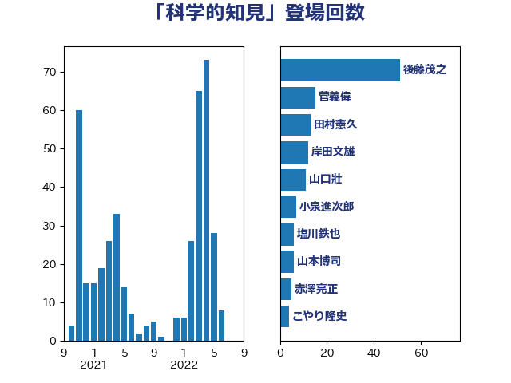

単語「科学的知見」

| 後藤茂之 | 自由民主党 | 51 回 |
| 菅義偉 | 自由民主党 | 15 回 |
| 田村憲久 | 自由民主党 | 13 回 |
| 岸田文雄 | 自由民主党 | 12 回 |
| 山口壯 | 自由民主党 | 11 回 |
| 小泉進次郎 | 自由民主党 | 7 回 |
| 塩川鉄也 | 日本共産党 | 6 回 |
| 山本博司 | 公明党 | 6 回 |
| 赤澤亮正 | 自由民主党 | 5 回 |
| こやり隆史 | 自由民主党 | 4 回 |
| 井上信治 | 自由民主党 | 4 回 |
| 大西健介 | 立憲民主党 | 4 回 |
| 山際大志郎 | 自由民主党 | 4 回 |
| 斉藤鉄夫 | 公明党 | 4 回 |
| 浮島智子 | 公明党 | 4 回 |
| 伊波洋一 | 無所属 | 3 回 |
| 大野敬太郎 | 自由民主党 | 3 回 |
| 小里泰弘 | 自由民主党 | 3 回 |
| 島村大 | 自由民主党 | 3 回 |
| 川田龍平 | 立憲民主党 | 3 回 |
| 村井英樹 | 自由民主党 | 3 回 |
| 江島潔 | 自由民主党 | 3 回 |
| 萩生田光一 | 自由民主党 | 3 回 |
| 西銘恒三郎 | 自由民主党 | 3 回 |
| 中村裕之 | 自由民主党 | 2 回 |
| 伊藤孝恵 | 国民民主党 | 2 回 |
| 倉林明子 | 日本共産党 | 2 回 |
| 堀内詔子 | 自由民主党 | 2 回 |
| 宮本徹 | 日本共産党 | 2 回 |
| 小熊慎司 | 立憲民主党 | 2 回 |
| 山口那津男 | 公明党 | 2 回 |
| 岡本あき子 | 立憲民主党 | 2 回 |
| 川合孝典 | 国民民主党 | 2 回 |
| 松野博一 | 自由民主党 | 2 回 |
| 森山浩行 | 立憲民主党 | 2 回 |
| 浜口誠 | 国民民主党 | 2 回 |
| 田村智子 | 日本共産党 | 2 回 |
| 田村貴昭 | 日本共産党 | 2 回 |
| 磯崎仁彦 | 自由民主党 | 2 回 |
| 若宮健嗣 | 自由民主党 | 2 回 |
| 西村康稔 | 自由民主党 | 2 回 |
| 野上浩太郎 | 自由民主党 | 2 回 |
| 青山大人 | 立憲民主党 | 2 回 |
| 高橋はるみ | 自由民主党 | 2 回 |
| 三ッ林裕巳 | 自由民主党 | 1 回 |
| 三原じゅん子 | 自由民主党 | 1 回 |
| 三浦信祐 | 公明党 | 1 回 |
| 今枝宗一郎 | 自由民主党 | 1 回 |
| 伊東信久 | 日本維新の会 | 1 回 |
| 佐藤啓 | 自由民主党 | 1 回 |
| 北神圭朗 | 無所属 | 1 回 |
| 古川禎久 | 自由民主党 | 1 回 |
| 吉田統彦 | 立憲民主党 | 1 回 |
| 吉良よし子 | 日本共産党 | 1 回 |
| 坂本哲志 | 自由民主党 | 1 回 |
| 城井崇 | 立憲民主党 | 1 回 |
| 塩田博昭 | 公明党 | 1 回 |
| 大岡敏孝 | 自由民主党 | 1 回 |
| 室井邦彦 | 日本維新の会 | 1 回 |
| 寺田静 | 無所属 | 1 回 |
| 尾崎正直 | 自由民主党 | 1 回 |
| 山下芳生 | 日本共産党 | 1 回 |
| 山崎正恭 | 公明党 | 1 回 |
| 山本剛正 | 日本維新の会 | 1 回 |
| 山本香苗 | 公明党 | 1 回 |
| 山添拓 | 日本共産党 | 1 回 |
| 山谷えり子 | 自由民主党 | 1 回 |
| 岸信夫 | 自由民主党 | 1 回 |
| 新垣邦男 | 立憲民主党 | 1 回 |
| 朝日健太郎 | 自由民主党 | 1 回 |
| 本田顕子 | 自由民主党 | 1 回 |
| 松木けんこう | 立憲民主党 | 1 回 |
| 林芳正 | 自由民主党 | 1 回 |
| 柚木道義 | 立憲民主党 | 1 回 |
| 梅村聡 | 日本維新の会 | 1 回 |
| 梶山弘志 | 自由民主党 | 1 回 |
| 武部新 | 自由民主党 | 1 回 |
| 江田憲司 | 立憲民主党 | 1 回 |
| 深澤陽一 | 自由民主党 | 1 回 |
| 玄葉光一郎 | 立憲民主党 | 1 回 |
| 田名部匡代 | 立憲民主党 | 1 回 |
| 田村まみ | 国民民主党 | 1 回 |
| 石井啓一 | 公明党 | 1 回 |
| 石井正弘 | 自由民主党 | 1 回 |
| 石川昭政 | 自由民主党 | 1 回 |
| 福島みずほ | 社会民主党 | 1 回 |
| 竹谷とし子 | 公明党 | 1 回 |
| 笹川博義 | 自由民主党 | 1 回 |
| 緑川貴士 | 立憲民主党 | 1 回 |
| 舟山康江 | 国民民主党 | 1 回 |
| 葉梨康弘 | 自由民主党 | 1 回 |
| 藤井比早之 | 自由民主党 | 1 回 |
| 谷公一 | 自由民主党 | 1 回 |
| 赤嶺政賢 | 日本共産党 | 1 回 |
| 赤池誠章 | 自由民主党 | 1 回 |
| 赤羽一嘉 | 公明党 | 1 回 |
| 野田国義 | 立憲民主党 | 1 回 |
| 金子恵美 | 立憲民主党 | 1 回 |
| 青木愛 | 立憲民主党 | 1 回 |
| 青柳陽一郎 | 立憲民主党 | 1 回 |
| 高市早苗 | 自由民主党 | 1 回 |
| 高木啓 | 自由民主党 | 1 回 |